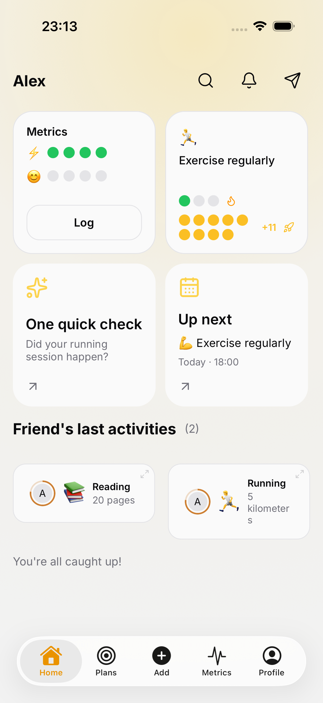
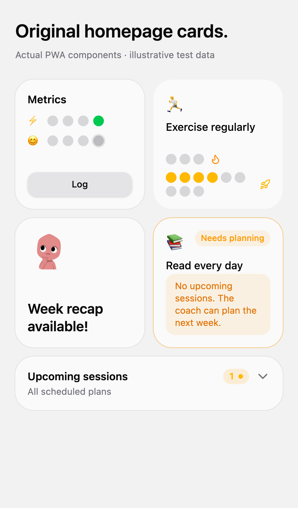
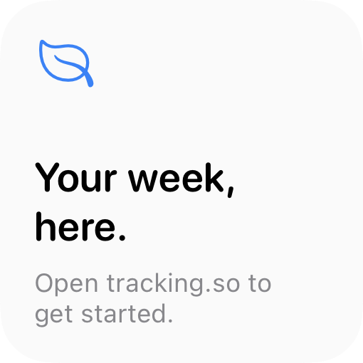
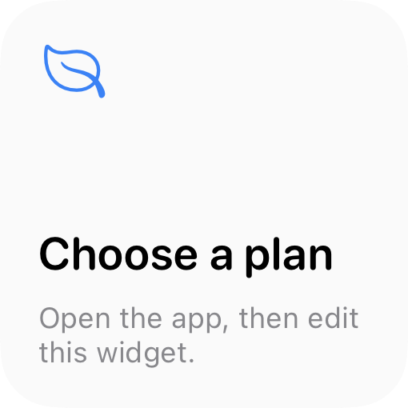
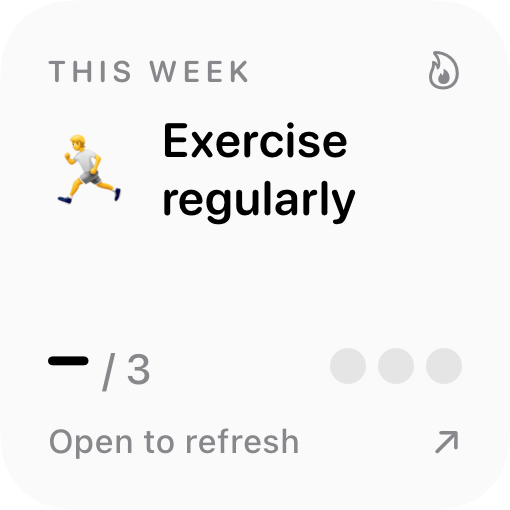

01 / Plan progress
This week takes the lead. Your streak and habit milestone sit quietly underneath. Choose a plan by touching and holding the widget, then tapping Edit Widget.
Beautiful widgets for your iPhone Home Screen. The app keeps its original homepage cards and coach integration.
The widget images below are actual native SwiftUI renders from the production views. Names, dates and progress are illustrative fixture data. Tap a widget to preview its journey.
This week takes the lead. Your streak and habit milestone sit quietly underneath. Choose a plan by touching and holding the widget, then tapping Edit Widget.
Your next scheduled session, at a glance. Tap to open that session and use the app’s existing logging flow. Older scheduled plan slots open the matching plan.
A moment to notice how you feel. Four days of check-in dots; tap to open today’s metric logger directly.
Original homepage restored
The in-app redesign has been reverted. Plan cards keep their original stepped weekly and habit/lifestyle progress. Metrics keep the four-row check-in history and Log button.
The original coach check-in and Up next cards keep their original layout and actions. The separate iOS Home Screen widgets above remain available.
Actual iPhone simulator screenshot of the restored original homepage. The account and progress are test fixtures.


Original web cards restored
The PWA cards are also restored: plan indicators, Metrics and its Log button, coach recap, and the expandable upcoming-session calendar.
Actual original PWA components in an isolated display fixture, with illustrative data. This image is a card gallery, not a signed-in production homepage.
Everyday journeys
Long-press the Home Screen → Edit → Add Widget → tracking.so → Plan progress. Choose a size. Touch and hold the placed widget → Edit Widget → choose your plan. Add another instance for a second plan.
“Up next” shows the next unconfirmed scheduled session. Tap to open it. When you log its outcome in the app, the widget summary updates and the next session takes its place.
Tap Daily check-in → rate your metrics → Done. Today’s dots update from the saved entries. A skipped check-in is represented the same way as on the homepage.
Lock Screen
Plan progress also includes a circular progress gauge and a single-line summary. Up next includes a rectangular session summary. Add these through the iPhone’s Lock Screen customization.
Lock Screen families are implemented in WidgetKit; their appearance in the system widget gallery still needs device verification.
When life changes

Signed out or no snapshot.
Open the app to get started. Signing out clears the shared summary.

Plan removed.
The widget asks you to choose a plan instead of quietly switching to another one.

Last week’s summary.
Old weekly totals become a dash. “Open to refresh” makes the next step clear.
Implementation status: The native and PWA homepage redesign has been reverted to the original cards. The standalone iOS widgets remain implemented. TypeScript and browser journeys pass for the restored cards. Build 190 is verified and hosted for Safari installation with the original homepage cards and the standalone iOS widgets. Build 189 is superseded and still contains the reverted in-app redesign. The TestFlight request was canceled before any build or upload.
The app writes a compact display summary into its existing App Group. The widget does not receive account tokens, private notes or raw metric ratings. Dates advance on a native timeline; data updates when the app fetches and saves current homepage data. iOS controls widget refresh timing.
Native source: apps/frontend-expo/native/TrackingWidgets. Reproduce the renders with E2E_IOS_DEVICE=<booted simulator> node e2e/native/capture-widgets.cjs. Verify destinations with pnpm exec playwright test --config playwright.widgets.config.ts.